ELEC 4700 Assignment 1 - Monte-Carlo Modeling of Electron Transport
Contents
1 - Electron Modelling
a) Since we are doing a 2D simulation of the electrons, there are 2 degrees of freedom. Since 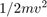 of energy is attibuted to each degree of freedom, and since 1/2kT is associated with each degree of freedom, then for our 2D system:
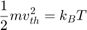
Solving for , using the fact that the effective mass of an electron is the rest mass :
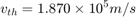
b) 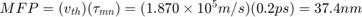
Following is the code for part 1:
clearvars clearvars -GLOBAL close all C.m_0 = 9.10938215e-31; % electron mass C.kb = 1.3806504e-23; % Boltzmann constant nElectrons = 10000; nPlot=20; % number of electrons to actually plot T = 300; L = 200e-9; W = 100e-9; dt = 1e-15; % since 1/100 of 200nm is 2nm, smallest step allowed is 2nm/vth ~= 1e-14s TStop = 1e-12; % 1000 timesteps Vth = sqrt(2*C.kb*T/(C.m_0*0.26)); % using 2 degrees of freedom time = 0; Temp = T; % temperature variable that updates in TempCalc taumn = 0.2e-12; % average time between collisions cc = jet(nPlot); % colorscale used to plot different electron colors x = rand(1, nElectrons)*L; % assigning random initial particle positions y = rand(1, nElectrons)*W; Theta = rand(1, nElectrons)*2*pi; % random velocity direction Vx = cos(Theta)*Vth; Vy = sin(Theta)*Vth; figure(1) hFig1 = figure(1); set(hFig1, 'Position', [500 0 600 1000]) for i=0:dt:TStop time = i; subplot(2,1,1); % plotting electron positions hold on for j=1:nPlot plot(x(j), y(j), 'o','markers', 1, 'Color', cc(j,:)); end axis([0 L 0 W]); V2tot=Vx.*Vx+Vy.*Vy; % calculated temp based on total velocities KE = mean(V2tot)*0.5*(C.m_0*0.26); Temp = KE/C.kb; subplot(2,1,2); % plotting temp vs. time plot(time,Temp, 'ro', 'markers',1,'MarkerFaceColor', 'b'); hold on axis([0 TStop 250 350]); xlabel('Time(s)'); ylabel('Temp (K)'); grid on title('Temperature vs. Time'); x = x - dt * Vx; % moving the particles in one time step y = y - dt * Vy; for j=1:nElectrons % specular and periodic boundaries if x(j) > L x(j) = x(j) - L; elseif x(j) < 0 x(j) = x(j) + L; end if y(j) > W Vy(j) = -Vy(j); elseif y(j) < 0 Vy(j) = -Vy(j); end end pause(0.001) end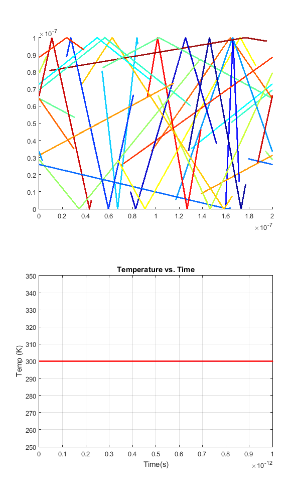
Part 1 Discussion
As shown in the temperature vs. time plot, the temperature does indeed remain at 300K, since the velocities of the electrons remains constant the entire time. As will be seen in the next sections, rethermalization of the electrons alters the velocities, and thus the temperature will fluctuate accordingly.
2 - Collisions with MFP
As mentioned in slideshow "3-MonteCarlo" on slide 16, the velocity for each direction (x, y) can be given by a gaussian distribution centered around the thermal velocity , with a standard deviation of 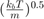. This method was used to determine the velocity components for the simulation, but clearly this resulted in an issue as the average temperature for the system becomes ~450K even with the initial thermal velocity being calculated with 300K. The Maxwell-Boltzman distribution would have been used to find the individual velocity components, but it was unclear how to do so in Matlab. Due to this issue, calculated values of average thermal velocity, mean free path, and average time between collisions are all incorrect. However, the methods used to calculate these parameters still appear valid.
Following is the code for part 2:
C.m_0 = 9.10938215e-31; % electron mass C.kb = 1.3806504e-23; % Boltzmann constant nElectrons = 10000; nPlot=20; % number of electrons to actually plot T = 300; L = 200e-9; W = 100e-9; dt = 1e-15; % since 1/100 of 200nm is 2nm, smallest step allowed is 2nm/vth ~= 1e-14s TStop = 1e-12; % 1000 timesteps Vth = sqrt(2*C.kb*T/(C.m_0*0.26)); % using 2 degrees of freedom time = 0; Temp = T; % temperature variable that updates in TempCalc taumn = 0.2e-12; % average time between collisions sigmaMB = sqrt(C.kb*T/(C.m_0*0.26)); % standard deviation on vth cc = jet(nPlot); % colorscale used to plot different electron colors collisionT = zeros(200,nElectrons); % matrices for tracking collision time and velocities collisionV = zeros(200,nElectrons); collisionIndex = ones(1,nElectrons); collisions = 0; x = rand(1, nElectrons)*L; % assigning random initial particle positions y = rand(1, nElectrons)*W; Theta = rand(1, nElectrons)*2*pi; % selecting Vx and Vy from Gaussian centered at vth Vx = cos(Theta).*(Vth + sigmaMB*randn(1, nElectrons)); Vy = sin(Theta).*(Vth + sigmaMB*randn(1, nElectrons)); avgV = sum(sqrt(Vx.^2+Vy.^2))/nElectrons % calculation of initial average velocity figure(2) hFig2 = figure(2); set(hFig2, 'Position', [500 0 600 1000]) for i=0:dt:TStop time = i; subplot(2,1,1); % plotting electron positions hold on for j=1:nPlot plot(x(j), y(j), 'o','markers', 1, 'Color', cc(j,:)); end axis([0 L 0 W]); V2tot=Vx.*Vx+Vy.*Vy; % calculated temp based on total velocities KE = mean(V2tot)*0.5*(C.m_0*0.26); Temp = KE/C.kb; subplot(2,1,2); % plotting temp vs. time plot(time,Temp, 'ro', 'markers',1,'MarkerFaceColor', 'b'); hold on axis([0 TStop 350 550]); xlabel('Time(s)'); ylabel('Temp (K)'); grid on title('Temperature vs. Time'); x = x - dt * Vx; % moving the particles in one time step y = y - dt * Vy; for j=1:nElectrons % specular and periodic boundaries if x(j) > L x(j) = x(j) - L; elseif x(j) < 0 x(j) = x(j) + L; end if y(j) > W Vy(j) = -Vy(j); elseif y(j) < 0 Vy(j) = -Vy(j); end end for j=1:nElectrons % collision, mfp, and mean time between collisions tracking if (1-exp(-dt/taumn)) > rand() collisions = collisions+1; collisionT(collisionIndex(j)+1,j) = time; collisionV(collisionIndex(j)+1,j) = sqrt(Vx(j)^2+Vy(j)^2); collisionIndex(j)=collisionIndex(j)+1; Theta = rand(1, 1)*2*pi; % rethermalizing after collision Vx(j) = cos(Theta)*(Vth + sigmaMB*randn(1, 1)); Vy(j) = sin(Theta)*(Vth + sigmaMB*randn(1, 1)); end end pause(0.000001) end figure(3) % histogram of final velocity distribution histogram(sqrt(Vx.^2+Vy.^2), 20); hold on xlabel('Binned velocities (m/s)'); ylabel('Frequency'); grid on title('Histogram of velocities of 10000 electrons'); hold off MFP=0; TBC=0; for i=1:nElectrons % calculation of time between collisions (TBC) and mean free path (MFP) for j=1:collisionIndex(i) if j ~= 1 TBC = TBC + collisionT(j,i)-collisionT(j-1,i); MFP = MFP + (collisionT(j,i)-collisionT(j-1,i))*(collisionV(j,i)-collisionV(j-1,i)); end end end TBC = TBC/collisions MFP = MFP/collisions
avgV = 2.0423e+05 TBC = 1.6015e-13 MFP = 7.8686e-09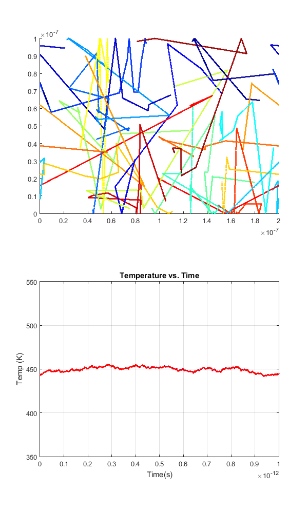 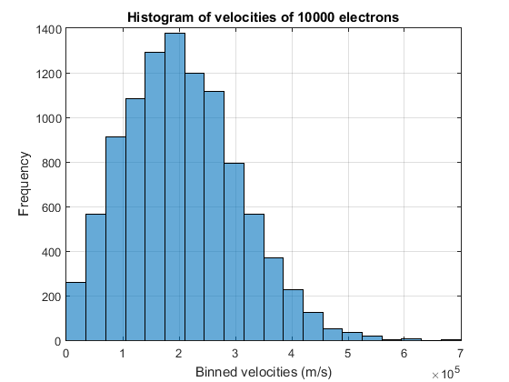
Part 2 Discussion
As shown in the histogram of velocities, even though the individual components were selected from Gaussian distributions, it appears that the overal velocity distribution is similar to the Maxwell-Boltzman distribution. As seen from the particle trajectories they are clearly exhibiting scattering in random directions at random intervals. The temperature vs. time plot shows that although the temperature exhibits minor fluctuations over time, it remains centered around ~450K. If the correct distributions were used, it would be assumed that this central temperature would be 300K instead. Comparing the TBC and MPF found in part 1 and the ones calculated in this code, there is clearly a discrepancy. As mentioned before, this is likely due to the average thermal velocity being larger than it should be, due the way velocities were selected from Gaussian distributions.
3 - Enhancements
Following is the code for part 3:
C.m_0 = 9.10938215e-31; % electron mass C.kb = 1.3806504e-23; % Boltzmann constant nElectrons = 10000; nPlot=20; % number of electrons to actually plot T = 300; L = 200e-9; W = 100e-9; dt = 1e-15; % since 1/100 of 200nm is 2nm, smallest step allowed is 2nm/vth ~= 1e-14s TStop = 1e-12; % 1000 timesteps Vth = sqrt(2*C.kb*T/(C.m_0*0.26)); % using 2 degrees of freedom time = 0; Temp = T; % temperature variable that updates in TempCalc taumn = 0.2e-12; % average time between collisions sigmaMB = sqrt(C.kb*T/(C.m_0*0.26)); % standard deviation on vth cc = jet(nPlot); % colorscale used to plot different electron colors collisionT = zeros(200,nElectrons); % matrices for tracking collision time and velocities collisionV = zeros(200,nElectrons); collisionIndex = ones(1,nElectrons); collisions = 0; x = rand(1, nElectrons)*L; % assigning random initial particle positions y = rand(1, nElectrons)*W; for i=1:nElectrons % ensuring particles do not start in boxed boundaries while(1) if ( x(i)<1.2e-7 && x(i)>0.8e-7 && (y(i)<0.4e-7 || y(i)>0.6e-7)) x(i) = rand*L; y(i) = rand*W; else break end end end Theta = rand(1, nElectrons)*2*pi; % selecting Vx and Vy from Gaussian centered at vth Vx = cos(Theta).*(Vth + sigmaMB*randn(1, nElectrons)); Vy = sin(Theta).*(Vth + sigmaMB*randn(1, nElectrons)); avgV = sum(sqrt(Vx.^2+Vy.^2))/nElectrons figure(4) hFig4 = figure(4); set(hFig4, 'Position', [500 0 600 1000]) subplot(2,1,1); % plotting lines of box boundaries hold on plot([0.8,0.8]*1e-7,[0,0.4]*1e-7, 'r-') plot([0.8,0.8]*1e-7,[0.6,1]*1e-7, 'r-') plot([1.2,1.2]*1e-7,[0,0.4]*1e-7, 'r-') plot([1.2,1.2]*1e-7,[0.6,1]*1e-7, 'r-') plot([0.8,1.2]*1e-7,[0,0]*1e-7, 'r-') plot([0.8,1.2]*1e-7,[0.4,0.4]*1e-7, 'r-') plot([0.8,1.2]*1e-7,[0.6,0.6]*1e-7, 'r-') plot([0.8,1.2]*1e-7,[1,1]*1e-7, 'r-') for i=0:dt:TStop time = i; subplot(2,1,1); % plotting electron positions hold on for j=1:nPlot plot(x(j), y(j), 'o','markers', 1, 'Color', cc(j,:)); end axis([0 L 0 W]); V2tot=Vx.*Vx+Vy.*Vy; % calculated temp based on total velocities KE = mean(V2tot)*0.5*(C.m_0*0.26); Temp = KE/C.kb; subplot(2,1,2); % plotting temp vs. time plot(time,Temp, 'ro', 'markers',1,'MarkerFaceColor', 'b'); hold on axis([0 TStop 350 550]); xlabel('Time(s)'); ylabel('Temp (K)'); grid on title('Temperature vs. Time'); x = x - dt * Vx; % moving the particles in one time step y = y - dt * Vy; for j=1:nElectrons % specular and periodic boundaries if x(j) > L x(j) = x(j) - L; elseif x(j) < 0 x(j) = x(j) + L; end if y(j) > W Vy(j) = -Vy(j); elseif y(j) < 0 Vy(j) = -Vy(j); end end for j=1:nElectrons % collision, mfp, and mean time between collisions tracking if (1-exp(-dt/taumn)) > rand() collisions = collisions+1; collisionT(collisionIndex(j)+1,j) = time; collisionV(collisionIndex(j)+1,j) = sqrt(Vx(j)^2+Vy(j)^2); collisionIndex(j)=collisionIndex(j)+1; Theta = rand(1, 1)*2*pi; % rethermalizing after collision Vx(j) = cos(Theta)*(Vth + sigmaMB*randn(1, 1)); Vy(j) = sin(Theta)*(Vth + sigmaMB*randn(1, 1)); end end % the following code is uncommented if diffusive boundaries are desired %%%%%%%%% BlockBordersDiffusive Begin %%%%%%%%%%% % for i=1:nElectrons % rethermalized when hit boundary, theta defines scattering angle so it reflects away from boundary % if Vy(i)<0 && y(i)>0.6e-7 && y(i)<0.61e-7 && x(i)<1.2e-7 && x(i)>0.8e-7 % Theta = rand*pi; % Vx(i) = cos(Theta)*(Vth + sigmaMB*randn(1, 1)); % Vy(i) = sin(Theta)*(Vth + sigmaMB*randn(1, 1)); % elseif Vy(i)>0 && y(i)<0.4e-7 && y(i)>0.39e-7 && x(i)<1.2e-7 && x(i)>0.8e-7 % Theta = rand*pi+pi; % Vx(i) = cos(Theta)*(Vth + sigmaMB*randn(1, 1)); % Vy(i) = sin(Theta)*(Vth + sigmaMB*randn(1, 1)); % elseif Vx(i)<0 && x(i)>0.8e-7 && x(i)<0.81e-7 && (y(i)<0.4e-7 || y(i)>0.6e-7) % Theta = rand*pi-pi/2; % Vx(i) = cos(Theta)*(Vth + sigmaMB*randn(1, 1)); % Vy(i) = sin(Theta)*(Vth + sigmaMB*randn(1, 1)); % elseif Vx(i)>0 && x(i)<1.2e-7 && x(i)>1.19e-7 && (y(i)<0.4e-7 || y(i)>0.6e-7) % Theta = rand*pi+pi/2; % Vx(i) = cos(Theta)*(Vth + sigmaMB*randn(1, 1)); % Vy(i) = sin(Theta)*(Vth + sigmaMB*randn(1, 1)); % end % end %%%%%%%%% BlockBordersDiffusive End %%%%%%%%%%% % the following code is uncommented if specular boundaries are desired %%%%%%%%% BlockBorders Begin %%%%%%%%%%% for i=1:nElectrons % conditions for meeting a boundary, specular reflection by inverting x or y velocity if Vy(i)<0 && y(i)>0.6e-7 && y(i)<0.61e-7 && x(i)<1.2e-7 && x(i)>0.8e-7 Vy(i)=-Vy(i); elseif Vy(i)>0 && y(i)<0.4e-7 && y(i)>0.39e-7 && x(i)<1.2e-7 && x(i)>0.8e-7 Vy(i)=-Vy(i); elseif Vx(i)<0 && x(i)>0.8e-7 && x(i)<0.81e-7 && (y(i)<0.4e-7 || y(i)>0.6e-7) Vx(i)=-Vx(i); elseif Vx(i)>0 && x(i)<1.2e-7 && x(i)>1.19e-7 && (y(i)<0.4e-7 || y(i)>0.6e-7) Vx(i)=-Vx(i); end end %%%%%%%%% BlockBorders End %%%%%%%%%%% pause(0.001) end MFP=0; TBC=0; for i=1:nElectrons % calculation of time between collisions (TBC) and mean free path (MFP) for j=1:collisionIndex(i) if j ~= 1 TBC = TBC + collisionT(j,i)-collisionT(j-1,i); MFP = MFP + (collisionT(j,i)-collisionT(j-1,i))*(collisionV(j,i)-collisionV(j-1,i)); end end end TBC = TBC/collisions MFP = MFP/collisions figure(5) % plotting electron density map in a 50x50 grid hold on n=hist3([x',y'],[50 50]); pcolor(n'); colorbar; title('Electron Density Map'); hold off V5050 = zeros(50); for h=1:nElectrons % calculating velocities for temperature calculation for i=1:50 for j=1:50 if x(h)>((i-1)/50*L) && x(h)<(i/50*L) && y(h)>((j-1)/50*W) && y(h)<(j/50*W) V5050(i,j)=Vx(h)^2+Vy(h)^2; end end end end for i=1:50 % taking average velocity per cell for j=1:50 if n(i,j)~=0 V5050(i,j) = V5050(i,j)/n(i,j); else V5050(i,j) = 0; end end end figure(6) % plotting temperature density hold on m=V5050.*0.5*0.26*C.m_0/C.kb; pcolor(m'); colorbar; title('Temperature Map'); hold off
avgV = 2.0582e+05 TBC = 1.6062e-13 MFP = 8.0319e-09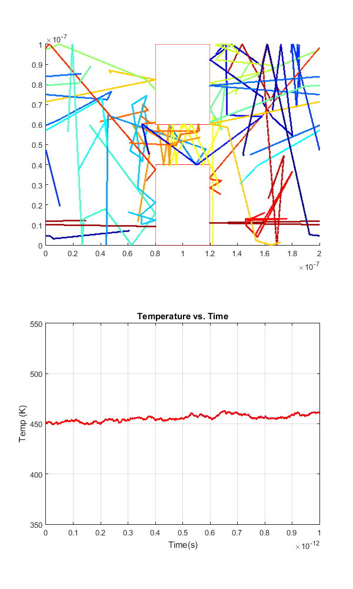 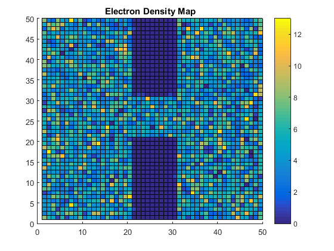 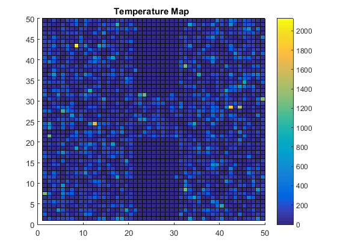
Part 3 Discussion
As shown in the trajectories plot, all of the electrons begin outside of the boundaries and also scatter off of the boundaries when encountered. The specular scattering is observed in this plot, but to enable diffuse scattering the labelled code in the section above would need to be uncommented, and the specular code would need to be commented. The maps of electron density and temperature appear to show some electrons in the boundaries, but that is only due to the histogram having bins that include the borders of the boundaries.